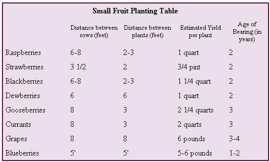

PRUNING - THE SECRET OF SUCCESS: Pruning can become a complicated subject. The main point is that all grapes are borne on branches (called canes) developed from previous year's growth. A little study of grape care and pruning pays high dividends.